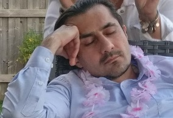

Anis M.
Enjoy building stuff whether it's a character on stage or web-applications that connect artists from around the globe. Spend considerable amount of time learning web-technologies. Calisthenics enthusiast with weakness for chicken wings and pizza. And when I'm not exploring Toronto's many quaint coffee shops and local scrumptious restaurants, I'm planning my next nomadic expedition to explore cultures, architecture, museums, and beaches. As much as I enjoy staying-in, travelling to far-away places I've yet to visit is a must. Prankster at heart, especially playing pranks on my close friends.